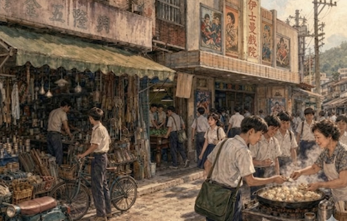

文中路下的噴香時光
文/蔡宏哲
— 新店街、夭鬼巷與光明街的少年遊蹤 —
放學仙樂：文中路的斜坡喧囂
那是民國六十四、五年間的事了，新店的太陽似乎總比別處烈一些，尤其是在文山國中那道長坡上。每逢禮拜三、禮拜六，中午放學鈴聲一響，對我們這些心不在焉、課本老是讀不進腦袋瓜裡的學生來說，簡直是這世間最動聽的仙樂。我扯了扯汗水浸濕的制服領口，背起書包，便隨著人潮往文中路那道斜坡衝下去。
站在文中路的當口，那是兩個完全不同的世界。往右手邊瞧去，是整排正經八百的行政官署。公路局、警察局、新店鎮公所，還有那地政與戶政事務所，一個個挨著排開。那些機關的大門總是深沉沉的，進出的人都板著一張嚴肅的臉孔。但若你把頭轉向左邊，嘿，那景象就全活了過來。
夭鬼巷：鐵皮屋下的油香天堂
那一格一格由鐵皮屋搭蓋起來的，就是我們喚作「夭鬼巷」的地方。雖然長輩們總說那裡亂，但在我們眼裡，那裡簡直是少年人的天堂。那兒充滿了混雜著汗水與炭火的煙熏味，算命的老先生捻著鬍鬚，攤位上擺滿了稀奇古怪的小物件。但最勾人的還是那陣陣撲鼻而來的油香，我們這群正值發育期的「夭鬼」，口袋裡沒幾個錢，卻總愛在那些鐵皮格子間穿梭，為的就是尋那一口熱騰騰的滿足。

光明街：水煎包、戲院與撞球間
若是夭鬼巷還填不滿肚皮，我們便會蹓躂到光明街去。那兒有全店最熱鬧的街景。我總會直奔太裕五金行，不為買五金，而是為了隔壁那家「楊家水煎包」。楊家的女兒楊翠環就在五金行裡忙進忙出，而那鍋裡的水煎包，皮薄底焦，一口咬下，肉汁噴濺在舌尖上的鮮甜，是那個貧乏年代裡最奢侈的享受。
那時沒什麼手機，資訊也慢，我們的快樂卻單純得很。吃飽了，就溜進光明街上的伊士曼戲院看場電影，或是躲進戲院旁的撞球間，聽著那撞球劈啪作響的清脆聲音。沒人管什麼功課，也沒人愁什麼未來，只要能在那碧潭戲院與文中路之間，在這兩處新店最繁華的區域消磨掉一個下午，日子就彷彿能永遠這樣悠哉下去。
有時逛累了，我們會站在新店後街仰望新店國小的方向。那邊有片安靜的教師宿舍，總給人一種神祕的氣息。但那畢竟不是我們這群浪蕩少年的活動範疇，我們的靈魂是屬於市場裡的喧嘩、戲院裡的黑影，以及手中那顆燙手的水煎包。
青春坐標：老新店的煙火歷史回聲
歲歲年年，時光像碧潭的水，靜靜地流走了。如今的水煎包雖然還在，卻多由外勞代勞，那種記憶深處的味道已然走調，成了再也尋不回的嘆息。
2026年的今天，隨著走讀隊伍，我佇立在捷運新店總站出口，環視文中路、新店路與光明街，回首前塵往事，當年「夭鬼巷」代表了新店在轉型為現代城市前，一個充滿煙火氣、結合了公務辦公與庶民飲食文化的歷史座標。它不僅是老新店人的共同食慾記憶，而且那段無憂無慮、接力遊逛於鐵皮屋下而揮灑汗水的時光，更是成了我回憶中最重要的青春歲月。